Research on thermal resistance Rthj-c to determine the junction temperature and its impact on selected light parameters of high-power LED sources
- Department of Power Electronics and Power Engineering, Rzeszow University of Technology, ul. Wincentego Pola 2, 35-959 Rzeszów, Poland
- Faculty of Electrical Engineering, Automatic Control and Informatics, Kielce University of Technology, Al. Tysiąclecia Państwa Polskiego 7, 25-314 Kielce, Poland
Article Info
Received 17 Feb. 2025
Received in revised form 03 Jun. 2025
Accepted 24 Jun. 2025
Available on-line 22 Jan. 2026
Keywords: LED sources; junction temperature; thermal resistance; light parameters; optical efficiency.
Abstract
The article examines the impact of temperature on the main lighting parameters of selected high-power LED sources. In the first stage of the research, the actual value of thermal resistance Rthj-c was determined, thereby enabling the final junction temperature Tj of the tested LED sources to be determined. Then, using a laboratory setup with a 50 cm integrating sphere and a Peltier module, the research examined the effect of temperature on the luminous flux Φ, correlated colour temperature (CCT), colour rendering index (CRI), spectral distribution, and optical efficiency ηo for three selected LED sources from various manufacturers. The tests were conducted at three forward current values, IF = 350, 700, and 1050 mA, and four Peltier module temperatures, Tp = 25, 45, 65, and 85 °C. The obtained research results were analysed and conclusions were formulated.
1. Introduction
LED light sources are currently the most widely used technology in indoor and outdoor lighting. Their high luminous efficiency associated high energy efficiency, ability to control power and luminous flux, and resistance to mechanical shocks have led to the replacement of previously used thermal and discharge light sources by LED sources [1–3]. Particular importance is attributed to high-power LED sources, which are widely used in interior lighting luminaires, streetlights, and floodlights [4, 5].
Despite many advantages, LED sources also have certain disadvantages and limitations that affect their photometric and electrical parameters and hinder their further development. Their main disadvantages, particularly in high-power sources, include thermal issues and their effects on fundamental performance parameters, as well as on lifespan [6–10].
In LED light sources, only a portion of the power is emitted as the luminous flux Φ, while the remaining part is lost as the heat PH, determined by the formula:
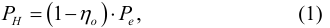
where PH is the thermal power, ηo is the optical efficiency, Pe is the electrical power.
In articles on semiconductor light sources, the optical efficiency of LEDs is often estimated to be 15–35%, indicating that a significant fraction of the input electrical power, Pe, is lost as heat [11–15] (Table 1). Several publications report that, for selected LED sources, the optical efficiency ηo may be higher [16].
A typical junction area in high-power LED sources is approx. 1 mm² and the forward current value IF can reach up to 2000 mA, resulting in high heat flux densities in the range of 300–500 W/cm². In contrast, a typical heat flux value for a processor is less than 100 W/cm² [12, 17].
In LED sources, a different heat flow path can be distinguished compared to other electronic systems, as shown in Fig. 1. For typical high-power electronic systems, such as processors, heat dissipation generally occurs through two paths: through the motherboard on which it is installed and through a heat sink attached to the other side of the processor. In LED sources, there is a single primary heat dissipation path through the heat sink mounted on the LED source subbase.
Percentage distribution of power in traditional and semiconductor light sources [15].
| Temperature light sources |
Fluorescent |
Metal halide |
LED | |
|---|---|---|---|---|
| Visible radiation | 8 | 21 | 27 | 15–35 |
| IR radiation | 73 | 37 | 17 | 0 |
| UV radiation | 0 | 0 | 19 | 0 |
| Heat (convection+ conduction) |
19 | 42 | 37 | 65–85 |
| Total | 100 | 100 | 100 | 100 |
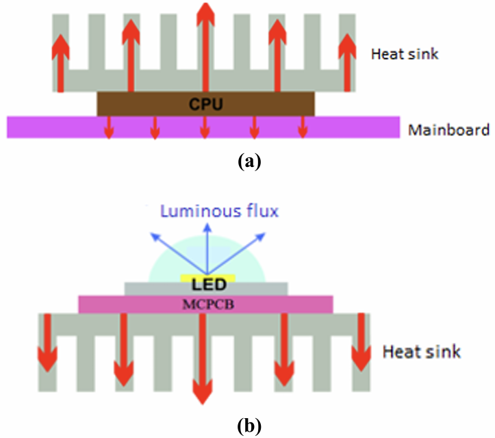
Fig. 1. Typical heat flow path: in a processor (a), in a LED source (b).
A persistently high value of the junction temperature Tj of LED sources may result in a change or even degradation of the parameters of the junction materials and contribute to a significant reduction in the life expectancy of the mentioned sources [18]. Furthermore, elevated temperature can induce thermal stresses related to the mismatch of thermal expansion coefficients of materials, with the active junction layer being particularly sensitive, typically having a thickness of only a few tens of nanometers.
High junction temperature Tj, in addition to the previously mentioned negative impact on the parameters of the semiconductor junction material, also affects the values of photometric and electrical parameters such as luminous flux Φ, correlated colour temperature (CCT), colour rendering index (CRI), and forward voltage UF (Fig. 2) [19, 20].
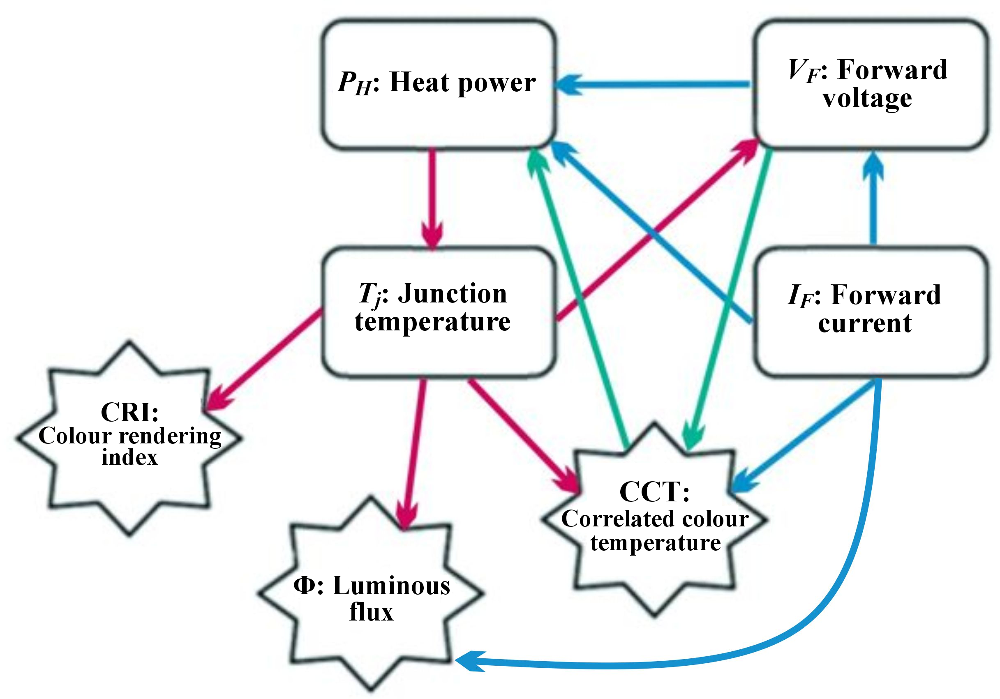
Fig. 2. Correlation between the junction temperature and the light and electrical parameters of LED sources.
The junction temperature affects the forward voltage UF of LED sources. The above influence can be described by the relationship [19]:
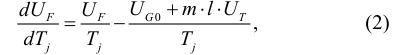
where l is the power factor in the temperature dependence of the semiconductor intrinsic carrier concentration (typical value is 3), UT is the thermal voltage (roughly 26 mV around room temperature 300 K), UG0 is the nominal value of the bandgap voltage of the semiconductor material. Parameter m is the device-specific constant called an ideality factor, m is 1 in the normal operation mode of an ideal diode. At very small currents, m = 2 because of recombination/generation effects in the depleted junction region. Theoretically, at very high currents m = 2 again because of the ambipolar diffusion of carriers of both types. These regions generally overlap, resulting in an m factor valid for a wide current range. The m factor can be calculated by more methods, the simplest is choosing two appropriate points from the characteristics:
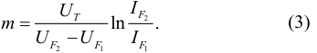
Below is the equation determining the influence of temperature Tj on the value of luminous flux Φ [21]:
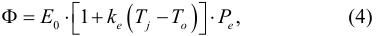
where E0 is the luminous efficacy at 25 °C, ke is the negative coefficient representing the rate of reduction of the luminous efficacy with the junction temperature Tj, To is this temperature of 25 °C, and Pe is the electrical power. The above form of the equation is valid assuming a constant value of the forward current IF.
As with the luminous flux Φ, the junction temperature affects the values of colorimetric parameters such as CRI and CCT. The change in these colorimetric parameters is particularly relevant for LED sources where white light is generated using a blue LED and a yellow phosphor. An increase in the temperature Tj leads to a shift in the LED source spectrum, resulting in changes to CCT and CRI. As Tj increases, the peak wavelength gradually shifts toward longer wavelengths linearly. The mentioned relationship can be defined as [21]:
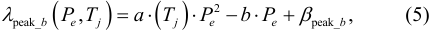
where βpeak_b is the referenced λpeak_b peak wavelength of the blue spectrum at ambient temperature, a and b are the positive coefficients as a function of junction temperature.
The ability to estimate the impact of junction temperature Tj on the performance parameters is crucial for designers of lighting luminaires using LED sources. In luminaires containing several, dozens, or hundreds of LED sources, it is also necessary to consider thermal interactions between the sources and select an optimal radiative system to ensure efficient heat dissipation from the semiconductor junction [22–27]. Considering all the above dependencies makes it possible to obtain the expected lighting parameters
and their stability over time, as well as a long life of LED lighting luminaires.
To determine the junction temperature of LED sources, the thermal resistance value Rthj-c is used, defined as the thermal resistance between the junction and the case of semiconductor light sources. The value declared by manufacturers is often determined for one single measurement condition and its actual value may differ significantly depending on the adopted operating conditions. In the literature related to thermal issues in LED sources, the thermal resistance Rthj-c is defined as one of the main parameters influencing the output parameters of light sources, as well as their service life. Numerous publications report research considering, among other things, the influence of the materials used on the value of resistance Rthj-c, the possibility of reducing it, and measurement methods that allow for determining its actual value [22, 28–30].
Another important aspect of thermal management in semiconductor light sources are simulation and measurement methods that allow determining the actual junction temperature of LED sources. Among the simulation methods, temperature analyses using FEM- or CFD-based models are employed. In these models, the material structure of semiconductor light sources, their die, internal radiator, thermal interface, structure of the printed circuit, and external radiator are recreated. In the aforementioned analysis, it is important to correctly parameterise the materials used, define the boundary conditions, and determine the thermal power of the analysed light sources. In the case of modelling the semiconductor junction, the value of the internal thermal resistance Rthj-c can be used.
Among the measurement methods used to determine the junction temperature of LED sources, solutions related to infrared thermal imaging methods are popular [31, 32]. Reference [33] analyses the phenomenon of the change in temperature of the LED junction with the circuit and the environment. It employs the curve fitting to relate the heattransfer parameters to the parameters of the LED integrated circuit and packaging. A real model was made on which real experiments were carried out in determining the junction temperature and the obtained results indicate the possibility of faster and more intuitive measurement in relation to traditional infrared measurement methods.
Reference [34] is a review of the literature related to currently used and modern solutions for effective heat removal from semiconductor light sources. This article presents and compares various heat-removal techniques, among others, including passive and active radiators, spray cooling, and refrigerants, with particular emphasis on nanofluid heat pipes as an efficient, compact, and economical method for heat removal in high-power LED sources.
This article presents the research results related to the influence of temperature on the main optical parameters of high-power LED sources. For three selected LED sources, in the first stage, the actual value of resistance Rthj-c was experimentally determined on the basis of which the junction temperature Tj of the LED sources was determined. Then, the influence of temperature Tj was investigated, the research examined the effect of temperature on the luminous flux Φ, CCT, spectral distribution, and CRI using an integrating-sphere setup and a Peltier module. In addition, the optical efficiency of ηo was determined over a wide range of forward current IF variations.
The presented measurement methods and experimental research results related to the determination and influence of the junction temperature on the basic light parameters of semiconductor light sources may constitute a modern approach to current thermal problems in LED sources. The discussed application of the actual thermal resistance, whose value varies within a fairly wide range depending on the measurement conditions adopted to determine the junction temperature of LED sources, may constitute an important extension of the thermal problems discussed in the publications presented in the introduction.
2. Methodology
Three high-power LED sources from two leading manufacturers and a third source from a less known manufacturer were selected for testing. High-power semiconductor light sources (HP LEDs) are among the most widely used lighting technologies. Their relatively high-power Pe from a single source, high luminous efficiency η, and a wide selection of optical lens systems for shaping the required light distribution have made these sources widely used in lighting luminaires (Table 2).
Basic opto-electrical parameters of the LED sources selected for the research [35–37].
| Type | LED A | LED B | LED C |
|---|---|---|---|
| Maximum forward current IF[mA] |
2000 | 1500 | 750 |
| Typical forward voltage UF[V],IF = 700 mA |
2.83 Tj = 85 °C |
2.96 Tj = 85 °C |
4.05 Ts= 25 °C |
| Maximum junction temperature Tj [°C] |
150 | 150 | 125 |
| Luminous fluxΦ[lm], IF = 700 mA |
317 Tj = 85 °C |
258 Tj = 85 °C |
150 Ts = 25 °C |
| CCT [K] | 5000 | 5300 | 5700 |
| CRI | min. 70 | min. 70 | min. 70 |
The forward voltage UF and the luminous flux Φ are specified for the forward current IF = 700 mA and the junction temperature Tj = 85 °C. For the diode marked as source C, these parameters were determined at the temperature Ts (Fig. 3), corresponding to the temperature at the point where the diode is soldered to the printed circuit board.
All selected LED sources of this type for the research were soldered to a metal-core printed circuit board (MCPCB) substrate with dimensions of 25 × 25 × 1.6 mm (Fig. 3).
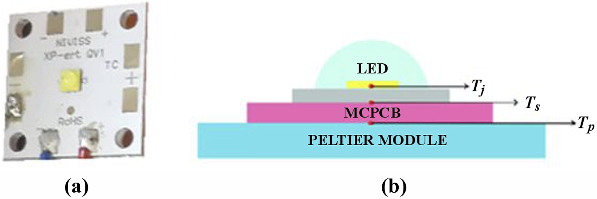
Fig. 3. For LED source A soldered onto the MCPCB substrate (a), the characteristic temperatures of the investigated semiconductor light sources are as follows: Tj – junction temperature, Ts – temperature at the soldering point of the diode to the MCPCB subbase, Tp – temperature of the Peltier module (b).
In the first step of the research, the real value of thermal resistance Rthj-c between the junction and the case of the tested LED sources was determined. The determined value of the mentioned thermal resistance will enable the estimation of the junction temperature Tj for the given Peltier module temperature Tp according to the following formula:
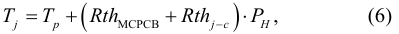
where Tj is the junction temperature of the LED source, Tp is the temperature of the Peltier module, RthMCPCB is the thermal resistance of the MCPCB substrate, Rthj-c is the thermal resistance between the junction and the case of the LED source, PH is the thermal power of the LED source.
Figure 4 shows an example of a high-power LED source design with internal layers that determine the internal thermal resistance [38].
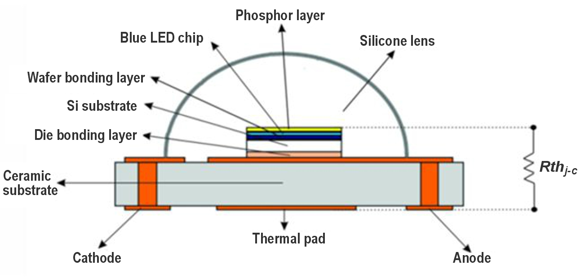
Fig. 4. An example of an HP LED source design and the physical interpretation of the internal thermal resistance.
The thermal resistance was determined based on the international standard developed by the JEDEC JC-15 Committee, “Thermal Characterization Techniques for Semiconductor Packages”. The Rthj-c thermal resistance measurement method, which also includes semiconductor light sources, was defined, among others, in standards JESD51-51 [8] and JESD51-14 [39].
The measurement method described in the JESD51-14 standard is based on determining a transient cooling curve for the tested LED source. The measurement is performed twice, for two thermally conductive materials with different thermal conductivity coefficients used between the LED source and the heat sink. The described method enables the determination of the point where the cooling curves diverge, while also allowing for the estimation of the thermal resistance Rthj-c.
Two identical HP LED sources were soldered to the same MCPCB printed circuit boards in a different way: all pads (one thermal and two electric) were soldered to the first source, whereas only the electric pads, omitting the thermal pad, were soldered to the second source (Fig. 5).
The method of mounting LED sources described above allows to determine the area of “spreading” cooling curves
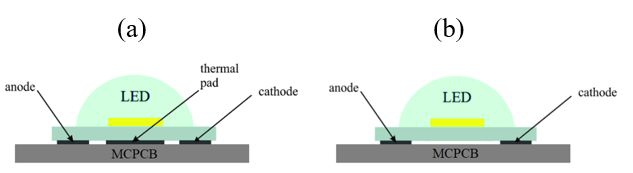
Fig. 5. Two types of installation of LED sources: with all pads soldered (a), without soldered thermal pad (b).
related to a different path and heat-flow conditions from the junction through the MCPCB substrate to the environment [10, 40].
The value of the thermal resistance Rthj-c of the tested light sources was measured using a T3Ster transient thermal tester from Mentor Gaphics [41]. The T3Ster measurement station, with dedicated software, is an advanced system for determining thermal properties of electronic systems, based on the JEDEC JC-15 standard.
Rthj-c measurements for the tested LED sources were carried out for three IF forward currents: 350 mA, 700 mA, and 1050 mA for sources A and B, and for IF currents: 350 mA and 700 mA for LED source C, which results from its permissible maximum values.
The research was carried out using a GL optic measurement station, which consisted of an Ulbricht sphere with a diameter of 50 cm [42], a stabilised TDK-Lambda GENH300-25 DC power supply, and a GL Spectis spectroradiometer [43]. The accuracy of the current measurement was up to 0.03%, and the voltage measurement was up to 0.05%. A Peltier module with a TECSource 5305 regulator from Arroyo Instruments was used to control the set temperature value. The measurement error related to the accuracy of the thermocouple and temperature controller did not exceed 0.4 °C [44].
Semiconductor light sources selected for testing were installed on the surface of the Peltier module [Fig. 3(b)], where the temperature Tp was set. The measurements were carried out for four temperatures: Tp: 25, 45, 65, 85 °C and for analogous values of forward currents IF for which thermal resistance Rthj-c measurements were performed. The forward current IF values listed cover the range of values most used to power high-power sources. Also, the range of temperatures Tp selected for testing and used to determine junction temperatures Tj mainly covers the temperatures at which LED sources operate in real-world conditions.
3. Results and discussion
The research on the thermal resistance Rthj-c began with determining the temperature coefficient of the LED source voltage, which serves as calibration data for determining the junction temperature Tj for the tested IF current values [8]. Subsequently, the measurement was performed in the heating and cooling states, which lasted approx. 30 min. All measurements were performed with convection cooling. Figure 6 shows the heating curves for the tested source A, which are determined by subtracting the temperature measured during cooling from the temperature value measured in the steady state.
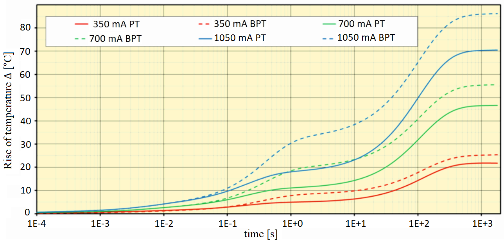
Fig. 6. Measured heating curves for the three tested IF forward currents – LED source A.
The heating curves are presented as a temperature increase above the ambient temperature To, which was 25 °C during the measurements. The heating curves for the LED source with all pads soldered are marked on the graph as a solid line (PT), whereas the LED sources without a soldered thermal pad are shown as a dashed line (BPT).
The moment of “separation” of the cooling curves after a time of approx. 30 ms indicates the point where heat flows from the junction to the substrate in different ways. This is related to the different method of mounting LED sources on the MCPCB substrate, which results in a different heat flow path in this place. The above method of mounting LED sources and the resulting “spreading” of the curves enables determination of the thermal resistance Rthj-c.
In the next stage, the saved heating curves are processed - with software using the network identification by decon volution (NID) method [10]. Processing data on temperature changes using this method makes it possible to determine, among others: thermal impedances, pulsation thermal resistances, and structural functions. The structure function represents the heat flow path as dynamic thermal resistance vs. heat capacity for each layer along the route.
The cumulative structural function graphs for LED sources A and C are shown in Figs. 7 and 9. The determined structural functions illustrate the heat flow path from the junction to the surroundings, expressed as a relationship between the accumulated thermal resistance and the accumulated thermal capacity.
In Figs. 7 and 8, the curves for LED sources with soldered electrical pads and a thermal pad are marked with a solid line, those without a thermal pad – with a dashed line. As heat flows from the junction to the LED source pads, the solid and dashed lines coincide. Where LED sources are mounted differently, there is a different heat flow path and the lines diverge. For a source with a soldered thermal pad, heat flows faster to the MCPCB substrate; this system is characterised by lower thermal resistance compared to the variant in which no thermal pad was used for heat flow. The point of “spreading” the lines projected
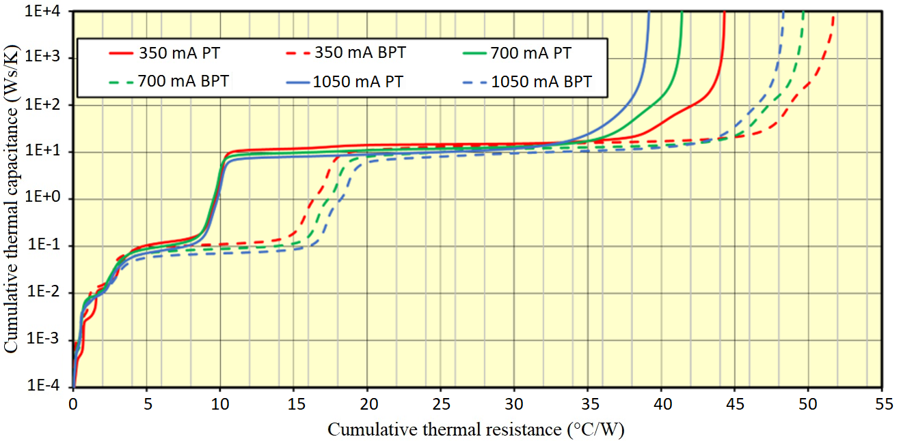
Fig. 7. Cumulative structural function – LED source A.
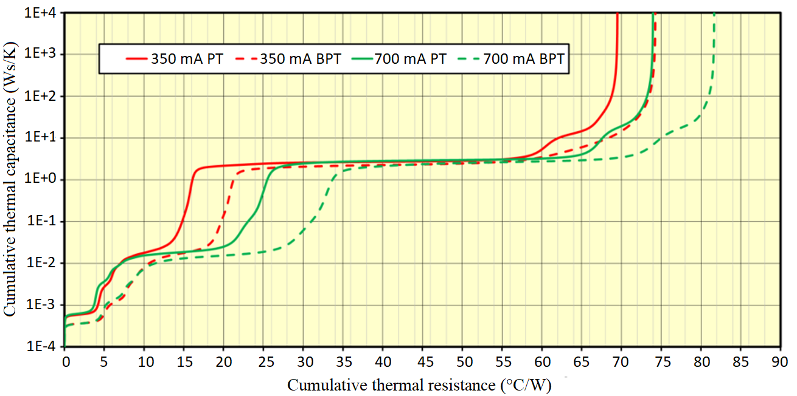
Fig. 8. Cumulative structural function – LED source C.
onto the axis of the accumulated thermal resistance indicates the value of the sought resistance Rthj-c, which occurs between the junction and the case of the semiconductor light source.
Table 3 lists the results of the determined thermal resistances Rthj-c for all tested semiconductor light sources.
Determined thermal resistance Rthj-c for the tested LED sources.
| Designation | LED A | LED B | LED C | |
|---|---|---|---|---|
| Thermal resistance, Rthj-c [°C/W] |
IF= 350mA | 8.6 | 13.5 | 13.6 |
| IF= 700mA | 8.6 | 14.1 | 21.2 | |
| IF= 1050mA | 8.8 | 17.1 | – | |
The determined value of the thermal resistance Rthj-c varied within limits and assumed different values depending on the manufacturer of the tested LED sources. Parameter Rthj-c can be defined as the quotient of the temperature difference between the junction and the housing of the LED source and the thermal power of the source. The increase in junction temperature is related to the heat generated by light which is generated but does not escape from the front surface of the die and is reabsorbed, as well as by charge carriers, which interact with the semiconductor crystal lattice during the recombination process. This heat must be dissipated by the die layer and the internal thermal pad, which is part of the housing, to ensure thermal contact with the mounting surface (Fig. 4). The efficiency of heat dissipation from the semiconductor junction depends on the thermal resistance Rthj-c, the value of which is influenced by the design, selection and geometry of the materials used by the manufacturer. The above factors will affect the obtained thermal power PH of a given LED source, which is related to the optical efficiency ηo of the LED sources and the applied value of the conduction current IF (Fig. 13).
The lowest value was measured for LED source A and was slightly below 9 °C/W. A characteristic feature of the aforementioned source was a practically constant Rthj-c value across the three tested IF current values. For LED source B, the measured resistance Rthj-c was approx. 60% higher than that of source A. For the mentioned source, the thermal resistance value also changed with the increase in the IF current, and when the IF current value increased from 350 to 1050 mA, the Rthj-c resistance value increased from 13.5 °C/W to 17.1 °C/W. For LED source C, the greatest impact of the increase in IF current on the Rthj-c value was observed, which increased from 13.6 °C/W to 20.8 °C/W with an increase in current from 350 to 700 mA.
The determined real thermal resistance Rthj-c for the tested LED sources will enable the determination of the junction temperature of the LED sources Tj in relation to the set temperature of the Peltier module Tp during the further part of the research related to the influence of temperature on selected lighting parameters. The junction temperature Tj was determined in accordance with (5), where the value of the thermal resistance Rthj-c is listed in Table 3, and the value of the thermal resistance RthMCPCB was 0.45 °C/W and was relatively small compared to the resistance Rthj-c. The thermal power PH was determined according to the equation:
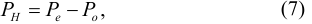
where Pe is the electrical power, Po is the optical power.
The optical power of the tested LED sources was determined using a GL Spectis 6.0 laboratory spectroradiometer characterised by an absolute measurement uncertainty not exceeding 4% [45]. The total optical radiation power of the tested LED sources was determined for the assumed temperature Tp and current IF in the visible radiation range of 340–850 nm. The determined energy flux as a function of wavelength in the visible range for the tested LED source A is shown in Fig. 9.
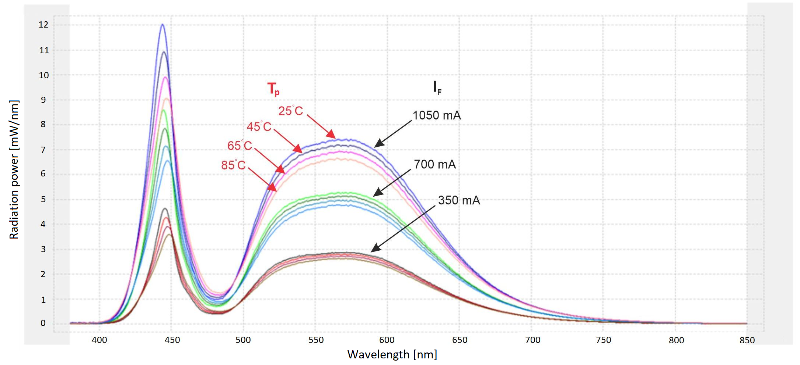
Fig. 9. Radiation power as a function of wavelength for given values of forward current IF and Peltier module temperature TP – LED source A.
Research related to the effect of temperature on the photometric parameters of LED sources began with the measurement of the luminous flux Φ. Measuring the luminous flux Φ is one of the key photometric parameters that allows assessing the efficiency and the luminous efficacy η of the tested LED source. This parameter depends mainly on the forward current IF and the diode operating temperature. Measurements were conducted for the three specified values of IF, after the set temperature Tp had stabilised.
The graph of the influence of temperature Tp and temperature Tj determined on this basis on the value of the luminous flux Φ for the tested values of the forward current IF is shown in Fig. 10.
Changing the temperature value Tp in the range from 25 to 85 °C resulted in a change in the junction temperature Tj in the range from approx. 30 to approx. 105 °C for the LED source A and from approx. 30 to 125 °C for the LED sources B and C. The temperature Tj was influenced by the resistance Rthj-c (Table 3).
The primary factor determining the value of the luminous flux Φ is the forward current IF. Doubling the value of the mentioned forward current resulted in an almost two-fold increase in the luminous flux Φ at the specified temperature Tp. As Tp increased, the luminous flux Φ value decreased for the tested forward current values. The percentage decrease in the luminous flux Φ was greater for higher values of IF. Source B exhibited the most significant reduction in the luminous flux Φ, with decreases of 11%, 13%, and 15% for the respective IF values: 350, 700, and 1050 mA. The smallest percentage decrease in the luminous flux Φ value was measured for the LED source A and amounted to 9, 10, and 11% for the three IF current values mentioned earlier.
In Fig. 11, the influence of the temperature Tp on the CCT of the studied LED sources is presented. The test was
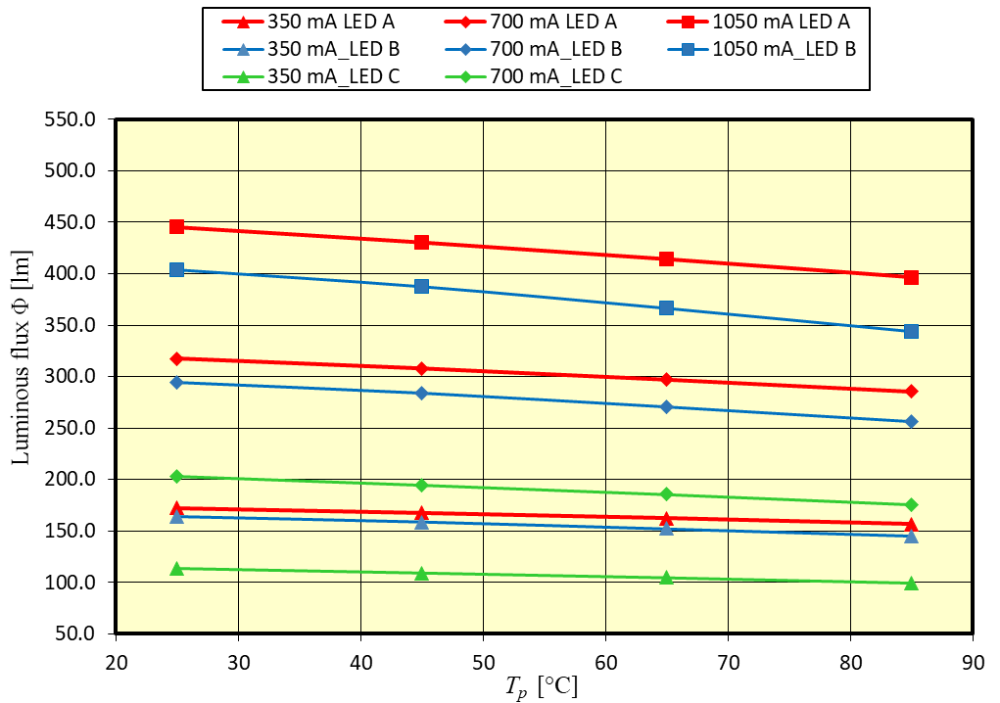
(a)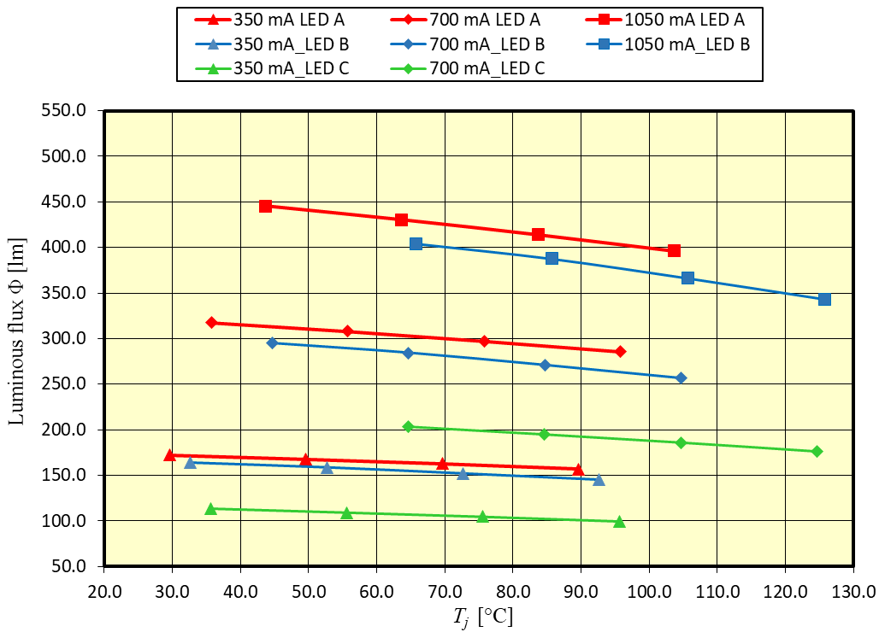
(b)Fig. 10. Influence of temperature Tp (a) and Tj (b) on the luminous flux Φ for the three studied LED sources.
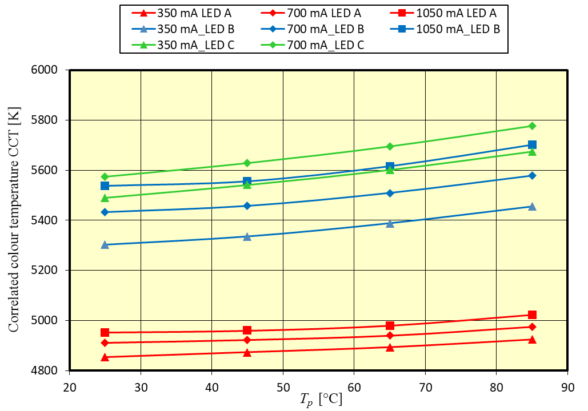
(a)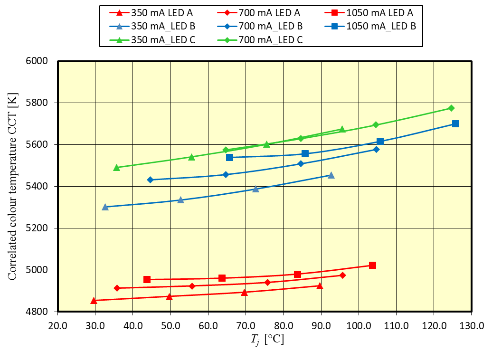
(b)Fig. 11. Influence of temperature Tp (a) and Tj (b) on CCT value for three LED sources tested.
conducted for analogous variations in forward current IF and temperature Tp. According to the catalogue data, the LED sources were characterised by the following CCT: 5000 K for source A, 5300 K for source B, and 5700 K for source C.
Based on the test results, it can be concluded that the CCT depends on the conduction current IF and temperature. As the IF current increased, the CCT value increased. For LED source A, increasing the IF current by a value of 350 mA resulted in an increase in the CCT by approx. 50 K, while for LED sources B and C, this increase was approx. 100 K. Also, the increase in the temperature Tp and the resulting junction temperature Tj caused an increase in the value of the CCT. The greatest increase was determined for LED sources B and C, where the increase in temperature Tp from 25 °C to 85 °C resulted in an increase in CCT of approx. 150–200 K, and for source A this increase was more than twice as small and amounted to approx. 75 K.
The influence of temperature on the CRI value is shown in Fig. 12. The measurements were conducted under conditions similar to those in the previous experiments.
The increase in the forward current IF had a minor impact on increasing the value of the CRI, with this effect being most noticeable for source B. However, a more significant factor affecting the change in the CRI was the variation in temperature Tp. For all the analysed sources, a linear increase in the CRI values was observed as Tp increased. The most significant impact was observed for sources B and C, where an increase in Tp temperature from 25 °C to 85 °C resulted in an increase in the CRI index by over 2.
The last of the studied parameters was the influence of temperature Tp on the optical efficiency ηo of the studied LED sources. The optical efficiency ηo was determined according to the following equation:
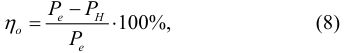
where PH is the thermal power, ηo is the optical efficiency, Pe is the electrical power.
The graph depicting changes in the optical efficiency ηo as a function of variations in forward current IF and temperature is presented in Fig. 13.
The optical efficiency ηo of the sources depended on the value of the forward current IF and the junction temperature Tj. For the lowest tested IF current value of 350 mA, the efficiency of LED sources was 50 and 47% for sources A and B, respectively, in the case of LED source C, the efficiency was only approx. 30%. An increase in the IF current value from 350 mA to 1050 mA resulted in a reduction in efficiency by approx. 10% for source A and 12% for source B. In the case of LED source C, an increase in IF from 350 mA to 700 mA resulted in a reduction in efficiency by approx. 6%.
The increase in the LED source temperature resulted in a smaller impact on the optical efficiency of the LED sources in relation to the change in the forward current IF ; a change in the Tp temperature from 25 °C to 85 °C resulted in a decrease in the optical efficiency ηo for all three tested IF currents by approx. 2–3% on average.
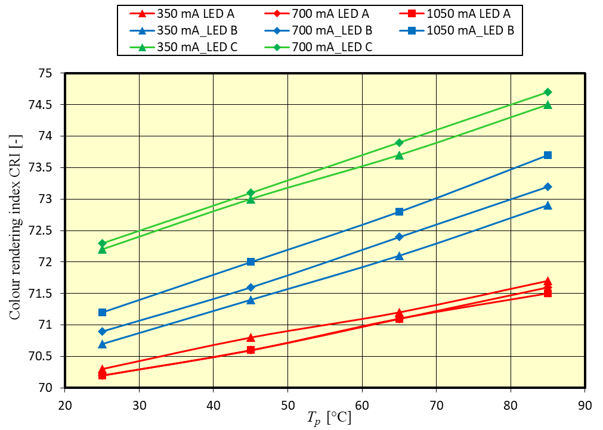
(a)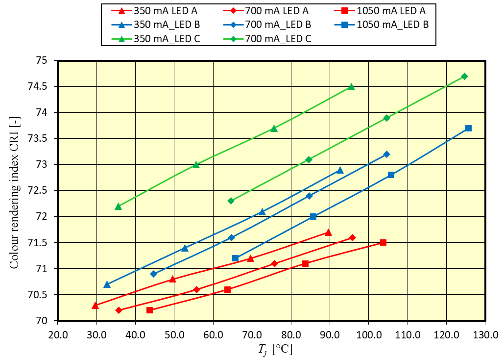
(b)Fig. 12. Influence of temperature Tp (a) and Tj (b) on CRI value for three LED sources tested.
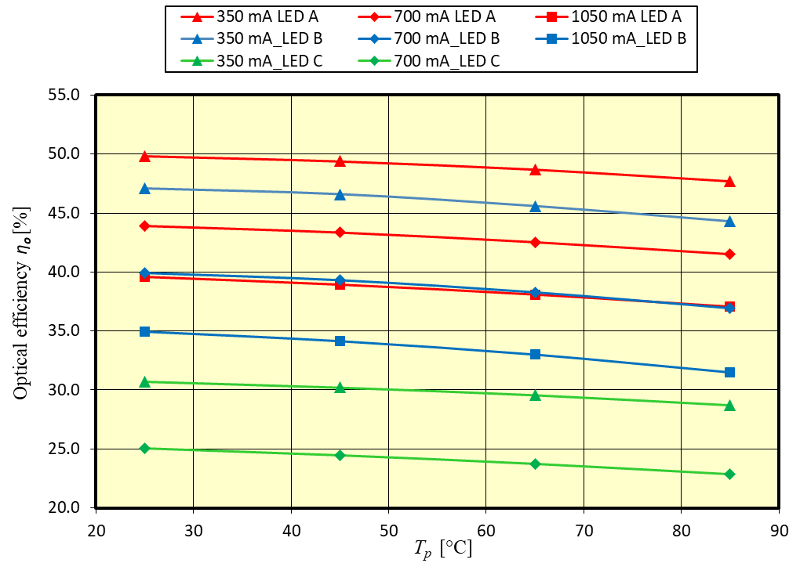
(a)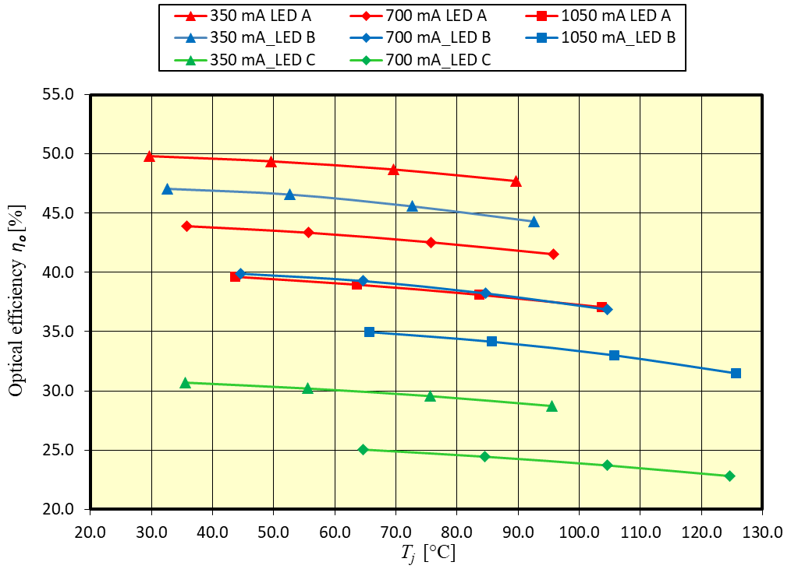
(b)Fig. 13. Influence of temperature Tp (a) and Tj (b) on the optical efficiency (ηo) value for three LED sources tested.
4. Conclusions
In the article, the results of research on the influence of temperature on the luminous flux Φ, CRI, CCT, and optical efficiency (ηo) for three selected high-power LED sources are presented. The research was conducted for three forward current values ranging from 350 to 1050 mA and temperatures ranging from 25 °C to 85 °C. An important part of the research, constituting a new approach to estimating the junction temperature of LED sources, was to determine the actual thermal resistance Rthj-c in a wide range of changes of the forward current IF. The determined real value of the thermal resistance Rthj-c of the tested LED sources allowed the junction temperature Tj to be determined in relation to the set temperature Tp. The determined actual value of the thermal resistance Rthj-c was higher than the declared values in the datasheet (3 °C/W for LED source A, 3.45 °C/W for LED source B, and 6 °C/W for LED source C). The datasheet also did not specify for which parameters of the conduction current IF and the temperature Tj, the Rthj-c values were determined, which have a significant impact on the final value of Rthj-c, as demonstrated by the tests conducted. Performing thermal simulation tests of LED sources based on such a defined constant value of Rthj-c may lead to larger errors related to determining the junction temperature Tj of the analysed LED sources.
The obtained research results confirm the significant influence of temperature on the output values of photometric parameters. For all tested LED sources, the increase in temperature led to a decrease in the luminous flux Φ. An increase in Tp from 25 °C to 85 °C resulted in a reduction in the luminous flux Φ in the range of 7 to 15%, depending on the studied source and the selected forward current IF.
The article also presents the detailed results on the influence of temperature on spectral parameters, such as CCT and CRI.
It is worth noting the high values of the optical efficiency ηo obtained for the tested LED sources. These values were higher than the values often declared in publications within the range of 15–35%. For the lowest investigated current value of IF = 350 mA, the optical efficiency ηo reached a value approaching 50% for the two tested LED sources. This is related to the selection of the most efficient sources from leading manufacturers for the study and it also demonstrates continuous development and technological progress in the field of semiconductor light sources. In the case of LED source C, the efficiency was much lower and was in the range of 25–30% depending on the measurement conditions, which resulted from the use of a light source from a less known manufacturer.
The research results confirm a strong influence of temperature on the fundamental photometric parameters of semiconductor light sources. These dependencies must be considered during the design of the output parameters of lighting luminaires. This creates special challenges when designing heat dissipation systems to mitigate the effects of temperature on the lighting performance of light sources and luminaires, ensuring their stabilisation over time and the most extended possible service life.
Authors’ statement
Research concept and design, K.B., S.R.; collection and assembly of data, K.B., P.S; data analysis and interpretation, A.R., S.R.; writing the article, K.B., S.R., P.S.; critical revision of the article, A.R., S.R.; final approval of article, K.B., P.S.
Nomenclature
-
ηooptical efficiency
-
λpeak_bpeak wavelength of the blue spectrum
-
Φluminous flux
-
CCTcorrelated colour temperature
-
CRIcolour rendering index
-
E0luminous efficacy at 25 °C
-
kenegative coefficient
-
HP LEDhigh-power LED
-
IFforward current
-
lpower factor in the temperature dependence
-
mideality factor for diode
-
MCPCBmetal core printed circuit board
-
NIDnetwork identification by deconvolution
-
Peelectrical power
-
PHthermal power
-
Pooptical power
-
Rthj-cLED thermal resistance junction to case
-
RthMCPCBMCPCB thermal resistance
-
Tjjunction temperature
-
Toambient temperature
-
TpPeltier module temperature
-
Tstemperature at the soldering point
-
UFforward voltage
-
UG0bandgap voltage of the semiconductor material
References
[1] Jägerbrand, A. K. LED (light-emitting diode) road lighting in practice: An evaluation of compliance with regulations and improvements for further energy savings. Energies 9, 357 (2016). https://doi.org/10.3390/en9050357
[2] Chen, H. T., Tan, S.-C. & Hui, S . Y. R. Analysis and modeling of high-power phosphor-coated white light-emitting diodes with a large surface area. IEEE Trans. Power Electron. 30, 3334–3344 (2015). https://doi.org/10.1109/tpel.2014.2336794
[3] Schubert, F. Light-Emitting Diode, 2nd ed. (Cambridge University Press, 2006).
[4] Wachta, H., Baran, K. & Leśko, M. The meaning of qualitative reflective features of the facade in the design of illumination of architectural objects. AIP Conf. Proc. 2078, 020102 (2019). https://doi.org/10.1063/1.5092105
[5] Acuña, P. C. et al. Impact of geometrical and optical parameters on the performance of a cylindrical remote phosphor LED. IEEE Photonics J. 7, 1601014 (2015). https://doi.org/10.1109/JPHOT.2015.2468679
[6] Oleksy, M., Kraśniewski., J. & Janke, W. Temperature influence on optical and electrical characteristics of power LED diodes. Prz. Elektrotech. 9, 83–85 (2014). https://archiwum.pe.org.pl/articles/2014/9/23.pdf (in Polish)
[7] Poppe, A. et al. Multi-domain modelling of LEDs for supporting virtual prototyping of luminaires. Energies 12, 1909 (2019). https://doi.org/10.3390/en12101909
[8] Standard JESD51-51. Implementation of the Electrical Test Method for the Measurement of Real Thermal Resistance and Impedance of Light-Emitting Diodes with Exposed Cooling Surface. JEDEC. (2012). http://www.simu-cad.com/images/upfile/201251415164849402.pdf
[9] Standard JESD51-52. Guidelines for Combining CIE 127-2007 Total Flux Measurement with Thermal Measurement of LEDs with Exposed Cooling Surface. JEDEC. (2012). http://www.simu-cad.com/images/UpFile/20125141526988759.pdf
[10] Torzewicz, T. et al. Compact Thermal Modeling of Power LED Light Source. in IEEE 30th International Conference on Microelectronics (MIEL) 157–160 (IEEE, 2017). https://doi.org/10.1109/MIEL.2017.8190091
[11] Hui, S., Li, S., Tao, X., Chen, W. & Ng, W. A novel passive offline LED driver with long lifetime. IEEE Trans. Power Electron. 25, 2665–2672 (2010). https://doi.org/10.1109/miel.2017.8190091
[12] Guo, Y., Pan, K.-l., Ren G.-t, Chen, S.-j. & Yuan, F. Research on LED Temperature Characteristic and Thermal Analysis at Low Temperatures . in 13th International Conference on Electronic Packaging Technology & High Density Packaging 1411–1415 (IEEE, 2012). https://doi.org/10.1109/icept-hdp.2012.6474870
[13] Hsu, H.-C. & Huang, Y.-C. Numerical simulation and experimental validation for the thermal analysis of a compact led recessed downlight with heat sink design. Appl. Sci. 7, 4 (2017). https://doi.org/10.3390/app7010004
[14] Ahn, B.-L e t al. Service in Cooling Energy with a Thermal Management System for LED Lighting in Office Buildings. Energies 8, 6658–6671 (2015). https://doi.org/10.3390/en8076658
[15] Pounds, D. & Bonner, R. High Heat Flux Heat Pipes Embedded in Metal Core Printed Circuit Boards for LED Thermal Management. in 14th Intersociety Conference on Thermal and Thermomechanical Phenomena in Electronic Systems (ITherm) 267–271 (IEEE, 2014). https://doi.org/10.1109/ITHERM.2014.6892291
[16] Yurtseven, M., Mete, S. & Onaygil, S. The effects of temperature and driving current on the key parameters of commercially available high-power white LEDs. Light. Res. Technol. 48, 943– 965 (2015). https://doi.org/10.1177/1477153515576785
[17] Yung, K. C., Liem, H., Choy, H. S. & Lun, W. K. Thermal performance of high brightness LED array package on PCB. Int. Commun. Heat Mass Transf. 37, 1266–1272 (2010). https://doi.org/10.1016/j.icheatmasstransfer.2010.07.023
[18] Narendran, N. & Gu, Y. Life of LED-based white light sources . IEEE/OSA J. Disp. Technol. 1, 167–171 (2005). https://doi.org/10.1109/jdt.2005.852510
[19] Lasance, C. J. M. & Poppe, A. Thermal Management for LED Applications. (Springer Science, Business Media: New York, 2014).
[20] Huang, Y-S. et al. How smart LEDs lighting benefit color temperature and luminosity transformation. Energies 10, 518 (2017). https://doi.org/10.3390/en10040518
[21] Hui, R. Photo-Electro-Thermal Theory for LED Systems. Basic Theory and Applications. (Cambridge University Press, 2017).
[22] Baran, K., Wachta, H., Leśko, M. & Różowicz, A. Research on thermal resistance Rthj-c of high power semiconductor light sources. AIP Conf. Proc. 2078, 020047 (2019). https://doi.org/10.1063/1.5092050
[23] Czyżewski, D . Comparison of luminance distribution on the lighting surface of power LEDs. Photonics Lett. Pol. 11, 118–120 (2019). https://doi.org/10.4302/plp.v11i4.966
[24] Barroso, A. et al. Characterization Framework to Optimize LED Luminaire’s Luminous Efficacy . in 2015 IEEE Industry Applications Society Annual Meeting 905–913 (IEEE, 2015). https://doi.org/10.1109/ias.2015.7356865
[25] Janicki, M., Ptak, P., Torzewicz, T. & Górecki, K. Experimental determination of thermal couplings in packages containing multiple LEDs. Energies 16, 1923 (2023). https://doi.org/10.3390/en16041923
[26] Chen, H., Chen, F., Lin, S. & Xiong, C. Thermal analysis of a multichip light-emitting diode device with different chip arrays . IEEE Trans. Electron Devices 64, 5001–5005 (2017). https://doi.org/10.1109/ted.2017.2766264
[27] Różowicz, A., Wachta, H., Baran, K., Leśko, M. & Różowicz, S. Arrangement of LEDs and their impact on thermal operating conditions in high-power luminaires. Energies 15, 8142 (2022). https://doi.org/10.3390/en15218142
[28] Lee, D. et al. A study on the measurement and prediction of LED junction temperature . Int. J. Heat Mass Transf. 127, 1243–1252 (2018). https://doi.org/10.1016/j.ijheatmasstransfer.2018.07.091
[29] Luo, X., Hu, R., Liu, S. & Wang, K. Heat and fluid flow in highpower LED packaging and applications. Prog. Energy Combust. Sci. 56, 1–32 (2016). https://doi.org/10.1016/j.pecs.2016.05.003
[30] Wang, C. Analysis of thermal resistance characteristics of power LED module. IEEE Trans. Electron Devices 61, 1 (2014). https://doi.org/10.1109/ted.2013.2291406
[31] Tamdogan, E., Pavlidis, G., Graham, S. & Arik, M. A comparative study on the junction temperature measurements of LEDs with Raman spectroscopy, microinfrared (IR) imaging, and forward voltage methods. IEEE Trans. Compon. Packag. Manuf. Technol. 8, 1914–1918 (2018). https://doi.org/10.1109/tcpmt.2018.2799488
[32] Jang, H., Lee, J. H., Byon, C. & Lee, B. J. Innovative analytic and experimental methods for thermal management of SMD-type LED chips. Int. J. Heat Mass Transf. 124, 36–45 (2018). https://doi.org/10.1016/j.ijheatmasstransfer.2018.03.055
[33] Zhao, H. et al. Research on LED junction temperature measurement method based on infrared thermal imaging. Proc. SPIE 128981, 129812C (2024). https://doi.org/10.1117/12.3015231
[34] Khudaiwala, A., Patel, R. L. & Bumataria, R. Recent developments in thermal management of light-emitting diodes (LEDS): A review . J. Therm. Eng. 10, 517−540 (2024). https://doi.org/10.18186/thermal.1457052
[35] XLamp[® ] XO-63LEDs. CREE LED Product Family Datasheet https://downloads.cree-led.com/files/ds/x/XLamp-XPG3.pdf (accessed on Sept. 18, 2024).
[36] Z Power LED – Z5-M3. Seoul Semiconductor Product Datasheet https://www1.futureelectronics.com/doc/Seoul%20Semiconductor/S1W0-3535307003-0000004S-00002.pdf (accessed on Dec. 10, 2024).
[37] SHwo 3W Series. Everlight Datasheet https://eu.mouser.com/datasheet/2/143/everlight_ever-sa0007434110-1-1734961.pdf (accessed on Sept. 15, 2023).
[38] Vakrilov, N., Stoynova, A. & Kafadarova. Application of CFD Modeling to Solve Problems in Thermal Design of LED Applications in the Initial Project Phase. in 40th International Spring Seminar on Electronics Technology (ISSE) 1–6 (IEEE, 2017). https://doi.org/10.1109/isse.2017.8000902
[39] Standard JESD51-14. Transient Dual Interface Test Method for the Measurement of the Thermal Resistance Junction-to-Case of Semiconductor Devices with Heat Flow Through a Single Path. JEDEC. (2010). https://www.jedec.org/standards-documents/docs/jesd51-14-0
[40] Torzewicz, T., Janicki, M. & Napieralski, A. Experimental Determination of Junction-to-Case Thermal Resistance in LED Compact Thermal Models. in 17th IEEE Intersociety Conference on Thermal and Thermomechanical Phenomena in Electronic Systems (ITherm) 768–772 (IEEE, 2018). https://doi.org/10.1109/itherm.2018.8419537
[41] Siemens EDA. Siemens http://www.mentor.com/products/mechanical/products/upload/micred-hardware-products-thermal-transient-test-and-measurement-18fcbdfa-d43f-46ce-95ca-920bd098a0d0 (accessed on Jan. 07, 2025).
[42] Standard Compliance in a flash. GL OPTIC Light quality control https://gloptic.com/wp-content/uploads/2023/12/EN-CatalogueGL-SPHERE-SYSTEMS.pdf (accessed on Jan. 08, 2025).
[43] GL SPECTIS. 6.0. GL OPTIC Light measurements solutions https://strebau.ro/PRODUSE_CAT/GLOPTIC2/200930_Technical-Datasheet_SPECTIS-6-0.pdf (accessed on Jan. 08, 2025).
[44] 5305 TECSource, 5A/12V. Arroyo Instruments http://www.arroyoinstruments.com/products/5305#tabs (accessed on Jan. 21, 2025).
[45] Photometry. InterElectronic https://interelectronic.com/uploads/files/gloptic_catalog_h.pdf (accessed on May 21, 2025)